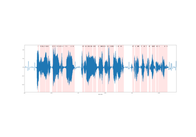

torchaudio.models.decoder¶
Decoder Class¶
CTCDecoder¶
-
class
torchaudio.models.decoder.CTCDecoder(nbest: int, lexicon: Optional[Dict], word_dict: torchaudio._torchaudio_decoder._Dictionary, tokens_dict: torchaudio._torchaudio_decoder._Dictionary, lm: torchaudio._torchaudio_decoder._LM, decoder_options: Union[torchaudio._torchaudio_decoder._LexiconDecoderOptions, torchaudio._torchaudio_decoder._LexiconFreeDecoderOptions], blank_token: str, sil_token: str, unk_word: str)[source]¶ -
CTC beam search decoder from Flashlight [1].
Note
To build the decoder, please use the factory function
ctc_decoder().- Parameters
nbest (int) – number of best decodings to return
lexicon (Dict or None) – lexicon mapping of words to spellings, or None for lexicon-free decoder
word_dict (_Dictionary) – dictionary of words
tokens_dict (_Dictionary) – dictionary of tokens
lm (_LM) – language model
decoder_options (_LexiconDecoderOptions or _LexiconFreeDecoderOptions) – parameters used for beam search decoding
blank_token (str) – token corresopnding to blank
sil_token (str) – token corresponding to silence
unk_word (str) – word corresponding to unknown
- Tutorials using
CTCDecoder: - 
ASR Inference with CTC Decoder
ASR Inference with CTC Decoder
-
__call__(self, emissions: torch.FloatTensor, lengths: Optional[torch.Tensor] = None) → List[List[torchaudio.models.decoder.CTCHypothesis]][source]¶ - Parameters
emissions (torch.FloatTensor) – CPU tensor of shape (batch, frame, num_tokens) storing sequences of probability distribution over labels; output of acoustic model.
lengths (Tensor or None, optional) – CPU tensor of shape (batch, ) storing the valid length of in time axis of the output Tensor in each batch.
- Returns
List of sorted best hypotheses for each audio sequence in the batch.
- Return type
List[List[CTCHypothesis]]
CTCHypothesis¶
-
class
torchaudio.models.decoder.CTCHypothesis(tokens: torch.LongTensor, words: List[str], score: float, timesteps: torch.IntTensor)[source]¶ Represents hypothesis generated by CTC beam search decoder
CTCDecoder().- Variables
tokens (torch.LongTensor) – Predicted sequence of token IDs. Shape (L, ), where L is the length of the output sequence
words (List[str]) – List of predicted words
score (float) – Score corresponding to hypothesis
timesteps (torch.IntTensor) – Timesteps corresponding to the tokens. Shape (L, ), where L is the length of the output sequence
- Tutorials using
CTCHypothesis: ASR Inference with CTC Decoder
ASR Inference with CTC Decoder
Factory Function¶
ctc_decoder¶
-
class
torchaudio.models.decoder.ctc_decoder(lexicon: Optional[str], tokens: Union[str, List[str]], lm: Optional[str] = None, nbest: int = 1, beam_size: int = 50, beam_size_token: Optional[int] = None, beam_threshold: float = 50, lm_weight: float = 2, word_score: float = 0, unk_score: float = - inf, sil_score: float = 0, log_add: bool = False, blank_token: str = '-', sil_token: str = '|', unk_word: str = '<unk>')[source]¶ Builds CTC beam search decoder from Flashlight [1].
- Parameters
lexicon (str or None) – lexicon file containing the possible words and corresponding spellings. Each line consists of a word and its space separated spelling. If None, uses lexicon-free decoding.
tokens (str or List[str]) – file or list containing valid tokens. If using a file, the expected format is for tokens mapping to the same index to be on the same line
lm (str or None, optional) – file containing language model, or None if not using a language model
nbest (int, optional) – number of best decodings to return (Default: 1)
beam_size (int, optional) – max number of hypos to hold after each decode step (Default: 50)
beam_size_token (int, optional) – max number of tokens to consider at each decode step. If None, it is set to the total number of tokens (Default: None)
beam_threshold (float, optional) – threshold for pruning hypothesis (Default: 50)
lm_weight (float, optional) – weight of language model (Default: 2)
word_score (float, optional) – word insertion score (Default: 0)
unk_score (float, optional) – unknown word insertion score (Default: -inf)
sil_score (float, optional) – silence insertion score (Default: 0)
log_add (bool, optional) – whether or not to use logadd when merging hypotheses (Default: False)
blank_token (str, optional) – token corresponding to blank (Default: “-“)
sil_token (str, optional) – token corresponding to silence (Default: “|”)
unk_word (str, optional) – word corresponding to unknown (Default: “<unk>”)
- Returns
decoder
- Return type
- Example
>>> decoder = ctc_decoder( >>> lexicon="lexicon.txt", >>> tokens="tokens.txt", >>> lm="kenlm.bin", >>> ) >>> results = decoder(emissions) # List of shape (B, nbest) of Hypotheses
- Tutorials using
ctc_decoder: ASR Inference with CTC Decoder
ASR Inference with CTC Decoder
Utility Function¶
download_pretrained_files¶
-
class
torchaudio.models.decoder.download_pretrained_files(model: str)[source]¶ Retrieves pretrained data files used for CTC decoder.
- Parameters
model (str) – pretrained language model to download. Options: [“librispeech-3-gram”, “librispeech-4-gram”, “librispeech”]
- Returns
- Object with the following attributes
- lm:
path corresponding to downloaded language model, or None if the model is not associated with an lm
- lexicon:
path corresponding to downloaded lexicon file
- tokens:
path corresponding to downloaded tokens file
- Tutorials using
download_pretrained_files: ASR Inference with CTC Decoder
ASR Inference with CTC Decoder